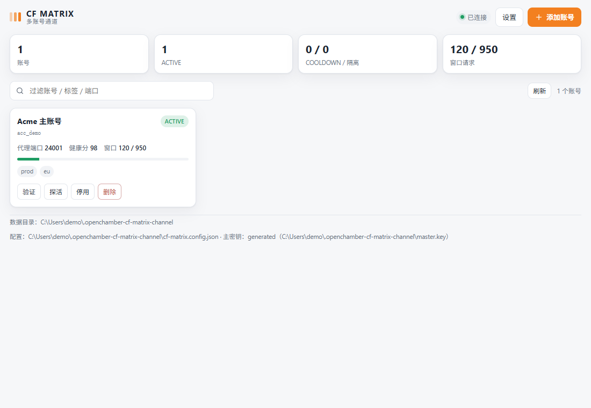
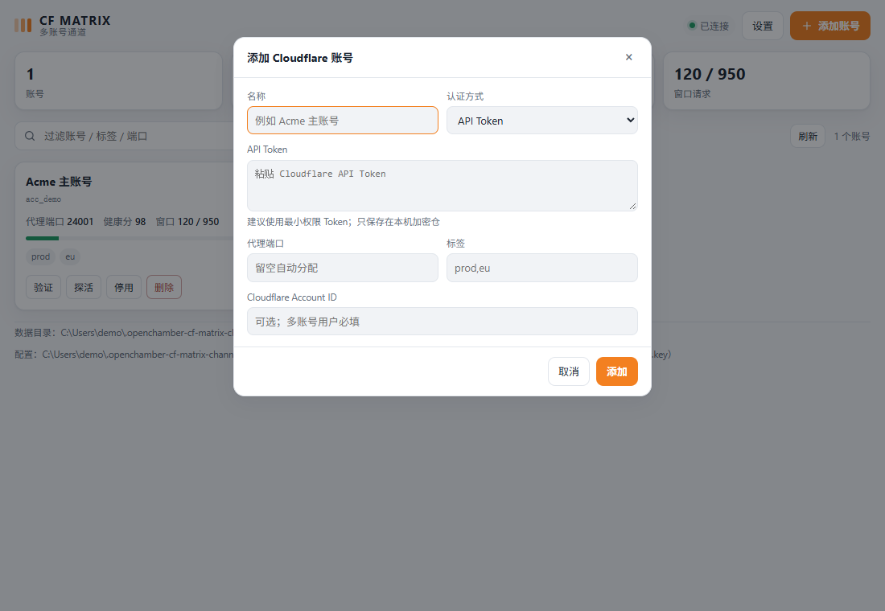
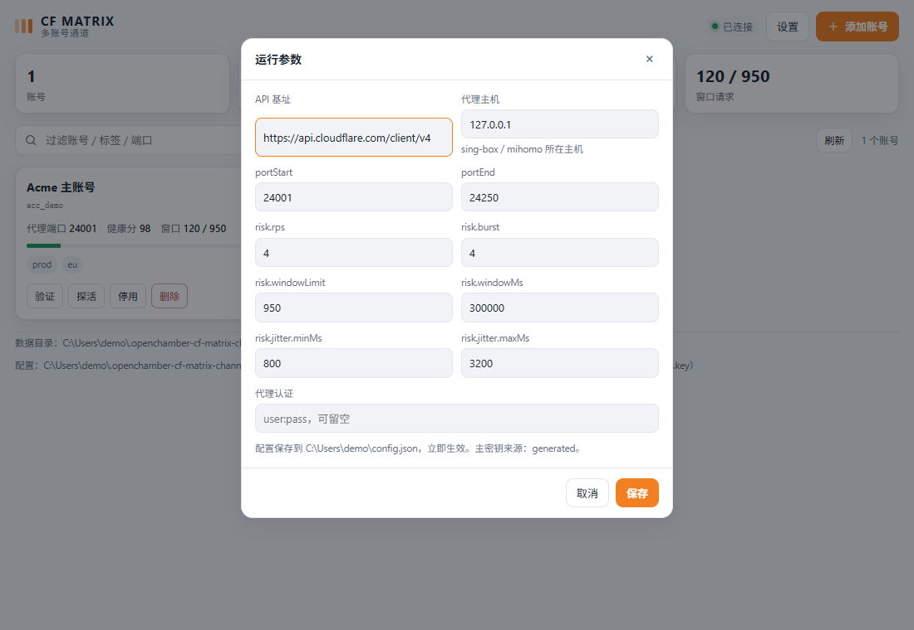

多 Cloudflare 账号矩阵扩展：账号 ⟷ 本地代理端口 1:1 绑定、AES-256-GCM 加密凭证仓、双令牌桶 + 泊松抖动、三级熔断状态机、
DNS / Tunnel / Worker 客户端与 JSON-RPC 桥。装进任意 OpenChamber 即可使用，无需 .env、无需手改配置。
从零到第一个账号上线，正常不超过两分钟。
npm install，没有构建步骤。OPENCHAMBER_SERVICE_PORT 与 OPENCHAMBER_SERVICE_TOKEN 并拉起 service。~/.openchamber-cf-matrix-channel。面板、CLI、RPC、service 共用同一份目录；host 空闲 10 分钟停 service，下次访问自动拉起，状态不丢。
三条通道共用一个 service：面板走 host SDK，CLI 走 stdio，外部程序走 localhost RPC。
CF_FAIL_CLOSED=false 在启动时直接被拒绝。端口不可达时请求在 fetch 之前就被阻断，绝不回落到宿主直连。
零构建 IIFE 面板，浅色/深色跟随系统；以下截图来自本地假 host 调试环境（非真实账号数据）。



每个 accountId 固定映射到 24001–24250 中的一个本地端口，绑定记录包含指纹、连接槽位与最后使用时间；端口被占用时拒绝，不共享、不漂移。
按账号账号级稳定生成 UA、Accept-Language 与请求头顺序；同一账号跨进程、跨重启保持一致，便于排障与风控归因。
短时 4 req/s（burst 4）+ 长时 950 req / 5 min 滑动窗口；预算持久化在状态文件里，进程重启不重置窗口。
非紧急写请求随机延迟 800–3200 ms 再发出；urgent:true 直接放行，保证交互操作不被拖慢。
ACTIVE → COOLDOWN（429/1015/低余量，尊重 Retry-After 与指数退避）→ QUARANTINED（401/403、10000/9103/9106/9109 等硬失败）。
AES-256-GCM 密封 Token / API Key，tmp+rename 原子写，withStateLock 跨进程互斥；公开视图永不返回密封材料。
| 状态 | 进入条件 | 行为 | 恢复 |
|---|---|---|---|
ACTIVE | 验证通过 / 冷却结束 | 正常参与挑选，按预算与抖动发送 | — |
COOLDOWN | HTTP 429、Cloudflare 1015、Ratelimit-Remaining 过低 | 跳过该账号；按 Retry-After 或指数退避设置解冻时间 | 到期自动回 ACTIVE |
QUARANTINED | 401/403，错误码 10000 / 9103 / 9106 / 9109 等 | 永久隔离，直到人工处理（更新 Token 或删除账号） | 手动 |
RPC / CLI 调用
└─ pickAccount() 按状态、健康分、窗口余量排序，跳过 COOLDOWN / QUARANTINED
└─ risk.reserve() 双令牌桶 + 滑动窗口，超限直接拒绝并给出重试时间
└─ jitter() 非 urgent 写请求 800–3200 ms 泊松延迟
└─ netBinder.request() 取 1:1 绑定，端口 TCP 探活（fail-closed）
└─ proxy-fetch CONNECT 隧道 → Cloudflare API
└─ evaluateResponseRisk()
├─ 成功：返回结果 + cfRay
└─ 失败：状态机迁移 + 告警事件默认 %USERPROFILE%\.openchamber-cf-matrix-channel（Windows）或 ~/.openchamber-cf-matrix-channel，可用 CF_MATRIX_DATA_DIR 重定向。
账号档案是低频写、强保密；状态文件是高频写、可重建；配置是人工可读。拆开后锁竞争只落在状态文件，密封操作不阻塞请求路径。
--master-key → CF_MATRIX_MASTER_KEY → --master-key-file / CF_MATRIX_MASTER_KEY_FILE → <dataDir>/master.key（缺失则生成）。
所有写入先落 tmp 文件再 rename；withStateLock 以租约文件实现跨进程互斥，20 路并发状态变更实测零丢失。
用错主密钥解封会抛 ERR_VAULT_KEY_MISMATCH，不会静默清空或覆盖既有账号。
service 只监听 127.0.0.1；除 GET /health 外全部要求 Bearer。详细参数见仓库 docs/RPC.md。
POST /rpc {"method":"cf.account.add","params":{...}}
POST /rpc/<method> params 直接作为请求体
GET /health 无需鉴权，返回 {"ok":true,...}| 方法 | 用途 | 关键参数 |
|---|---|---|
cf.matrix.status | 矩阵总览 | — |
cf.config.get / cf.config.patch | 读取 / 热更新运行参数 | apiBase, proxyHost, portStart, portEnd, risk, http |
cf.account.add | 新增账号，端口可省略 | label, token | email+apiKey, proxyPort?, tags? |
cf.account.list / update / remove | 账号 CRUD | id, patch |
cf.account.verify | 校验 Token / Key | id |
cf.dns.ensure | 幂等建 Zone 记录 | id, zone, name, type, content, proxied? |
cf.tunnel.provision | Zero Trust Tunnel | id, name, hostname, service |
cf.worker.deploy | Worker 脚本上传 | id, scriptName, code, bindings? |
cf.risk.report | 熔断 / 预算快照 | — |
cf.proxy.probe | 经绑定端口探活 | id |
{"ok":false,"error":{"code","message","details"}}，便于跨语言客户端处理。
不写 .env：面板设置、cf.config.patch、node index.js config set/patch 三条路径等价，改完立即生效，不需要重启 service。
| 键 | 默认值 | 说明 |
|---|---|---|
apiBase | https://api.cloudflare.com/client/v4 | 可指向代理网关或 mock |
proxyHost | 127.0.0.1 | sing-box / mihomo 所在主机 |
proxyAuth | null | user:pass，可选 |
portStart / portEnd | 24001 / 24250 | 端口池边界 |
risk.rps / burst | 4 / 4 | 短时速率 |
risk.windowLimit / windowMs | 950 / 300000 | 长时滑动窗口 |
risk.jitter.minMs / maxMs | 800 / 3200 | 非紧急写抖动区间 |
http.timeoutMs | 30000 | 单请求超时 |
每次改动后跑 npm test，三项串联：单元自检 → 集成环回 → 空目录首次安装。
密封、公开视图脱敏、20 路并发、窗口预算、429 冷却、403 隔离、fail-closed、指纹稳定、跨进程仓、密钥不匹配、multipart、配置归一化等。
真实 cf-client 经真实 proxy-fetch 链路打本地 mock Cloudflare：鉴权头注入、DNS 幂等、Tunnel、Worker 上传、429 failover。
无 init、无 .env：service 自动生成 master.key 与配置，首账号自动拿到 24001。
PASS vault seals tokens and never writes them in plaintext
PASS vault public views never expose sealed material
PASS 20 concurrent state mutations do not lose an update
PASS window budget allows exactly 5 of 20 concurrent reservations
PASS 429 with Retry-After moves the account to COOLDOWN and skips it in ranking
PASS 403 with error code 10000 permanently QUARANTINEs the account
PASS fail-closed: closed proxy port blocks before any fetch
PASS reachable proxy path uses the bound transport with a stable fingerprint
PASS pure classifier: 401 isolates, 200 returns ACTIVE
PASS sliding window prunes old buckets
PASS master key mismatch is rejected
PASS multipart worker upload has metadata and module parts
PASS config normalisation clamps inverted port ranges
PASS risk alerts fire for cooldown and quarantine
PASS cross-process vault additions keep every account
PASS config.accounts seeds only after matrix.ready resolves
PASS client rejects absolute URLs outside apiBase
17 passed, 0 failed
INTEGRATION OK requests=9 ua="openchamber-cf-matrix/1.0 (win32; x64)" cooldown=29998ms
fresh-install-check OK本地假 host（node test/panel-host-server.js → http://127.0.0.1:4599/test/panel-host.html）下用 Playwright 验证：刷新、验证 Token、设置保存、添加账号（自动端口）、停用/启用、删除二次确认，全部通过。
从 instabox-matrix 复用 proxy-fetch / store-lock / scheduler / sub2port 四个底座；实现 vault、risk-engine、net-binder、cf-client 与 RPC 桥。
修复 evaluateResponseRisk 的时间参数、UA 平台取值、密钥不匹配错误码、跨进程丢更新、URL 作用域校验、matrix.ready 播种顺序、Zone 缺失语义、DNS 点边界匹配。
主密钥自动生成、配置自动落盘、CLI 重写（init/status/accounts/verify/config/rpc）、cf.config.get|patch、apiBase 与端口池动态读取。
补齐 OpenChamber 面板（零构建 IIFE）与 contributes.page；按 2.7.2 host 协议修正 hello/ready 与按 id 应答；新增 fresh-install-check。
补齐 ARCHITECTURE / RPC / DEVELOPMENT 文档与本页；截图入 docs/assets/；私有仓库 openchamber-cloudflare。
把 lib/sub2port.js 的端口池约定接到实际进程管理：按账号拉起独立出站，端口释放自动回收。
当前仅作为 vault 元数据保存；Node 路径在本地端口不可达时仍然 fail-closed，不承诺 IPv6 直连。
对齐 instabox 的 contributes.tools，把 cf.dns.* / cf.tunnel.* 暴露给 agent。
面板批量验证、导入导出（密封格式）、按 cfRay 的请求审计视图。
wbi35772/openchamber-cloudflare（private）npm test